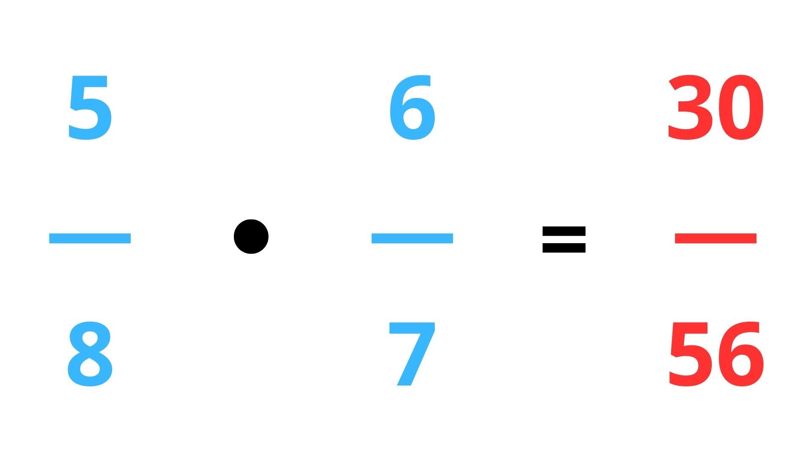
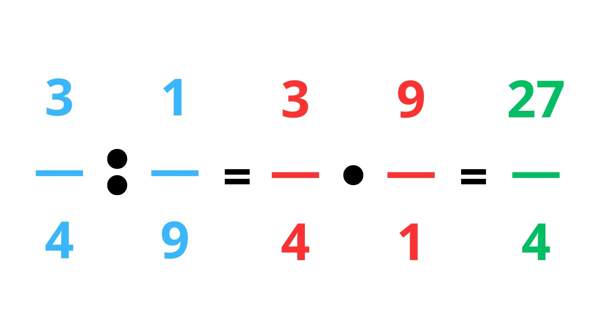
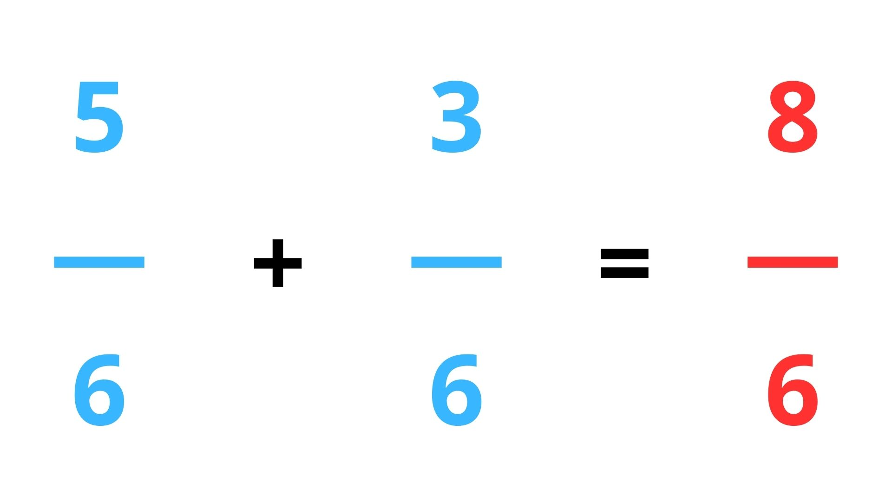
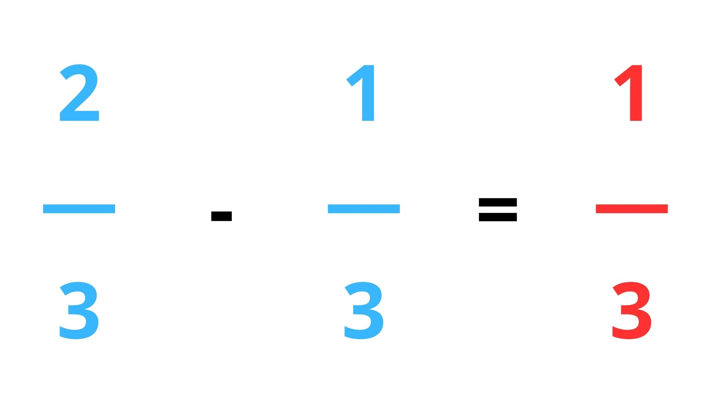
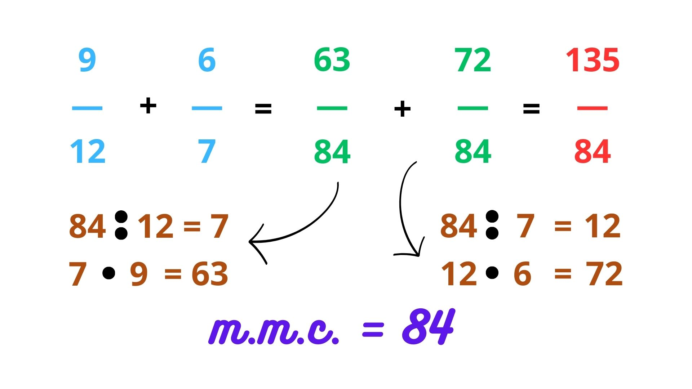
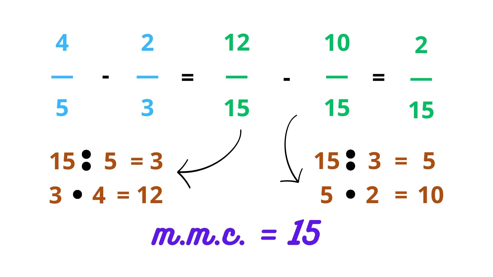
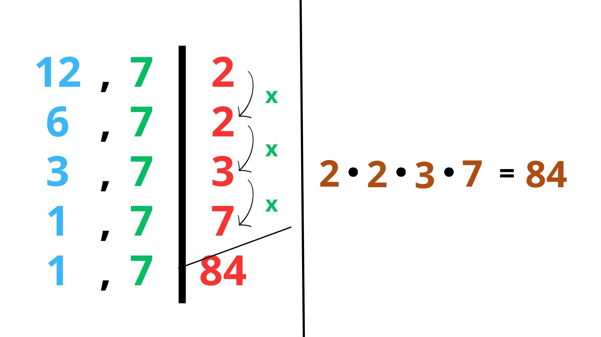

🎯 Por que as operações com frações são importantes?
As operações com frações são a base da matemática avançada. Elas aparecem em:
- Cozinha: "Meio litro mais um quarto"
- Construção: "Um terço do muro está pintado"
- Finanças: "Desconto de 1/4 sobre o valor total"
- Geometria: "Área de um triângulo com base 3/4"
Vamos aprender todas as operações com clareza, usando imagens e regras simples.
🔸 1. Multiplicação de Frações
Multiplicar frações é fácil: multiplique numerador por numerador e denominador por denominador.
Exemplo: \( \frac{2}{3} \times \frac{4}{5} = \frac{8}{15} \)

Dica: Não precisa de MMC na multiplicação!
🔸 2. Divisão de Frações
Para dividir frações, multiplique pela inversa.
Exemplo: \( \frac{3}{4} \div \frac{2}{5} = \frac{3}{4} \times \frac{5}{2} = \frac{15}{8} \)

Dica: A inversa é trocar numerador e denominador.
🔸 3. Soma com Denominadores Iguais
Quando os denominadores são iguais, somamos apenas os numeradores.
Exemplo: \( \frac{2}{7} + \frac{3}{7} = \frac{5}{7} \)

🔸 4. Subtração com Denominadores Iguais
Assim como na soma, se os denominadores são iguais, subtraímos os numeradores.
Exemplo: \( \frac{5}{9} - \frac{2}{9} = \frac{3}{9} = \frac{1}{3} \)

🔸 5. Soma com Denominadores Diferentes
Aqui entra o **MMC (Mínimo Múltiplo Comum)** — o segredo para somar frações com denominadores diferentes.
Passos:
- Encontre o MMC dos denominadores.
- Divida o MMC pelo denominador original.
- Multilique o resultado pelo numerador.
- Somar os novos numeradores.
Exemplo: \( \frac{1}{3} + \frac{1}{4} \)
MMC(3,4) = 12
\( \frac{1}{3} = \frac{4}{12} \) → \( 12 \div 3 = 4 \), \( 4 \times 1 = 4 \)
\( \frac{1}{4} = \frac{3}{12} \) → \( 12 \div 4 = 3 \), \( 3 \times 1 = 3 \)
Resultado: \( \frac{4}{12} + \frac{3}{12} = \frac{7}{12} \)

🔸 6. Subtração com Denominadores Diferentes
O processo é o mesmo da soma, mas com subtração.
Exemplo: \( \frac{3}{5} - \frac{1}{4} \)
MMC(5,4) = 20
\( \frac{3}{5} = \frac{12}{20} \) → \( 20 \div 5 = 4 \), \( 4 \times 3 = 12 \)
\( \frac{1}{4} = \frac{5}{20} \) → \( 20 \div 4 = 5 \), \( 5 \times 1 = 5 \)
Resultado: \( \frac{12}{20} - \frac{5}{20} = \frac{7}{20} \)

🔸 7. Como Calcular o MMC
O MMC é o menor número que é múltiplo de dois ou mais números.
Exemplo: MMC(12, 7)
Decomposição em fatores primos:
12 = 2² × 3
7 = 7¹
MMC = 2² × 3 × 7 = 84

Dica: Use o MMC para transformar frações com denominadores diferentes em frações equivalentes com o mesmo denominador.
🔸 8. Regra Dourada: "Divide pelo denominador, multiplica pelo numerador"
Essa é a regra mais importante para somar ou subtrair frações com denominadores diferentes.
Veja o exemplo completo:

Resumo:
- Encontre o MMC.
- Divida o MMC pelo denominador original.
- Multilique o resultado pelo numerador.
- Repita para todas as frações.
- Somar ou subtrair os novos numeradores.
⚠️ Lembre-se: Sempre simplifique a resposta final!
💡 Dica Final: Pratique com exemplos do dia a dia
Use situações reais para fixar o aprendizado:
- Se você tem 1/2 de uma pizza e come 1/4, quanto sobra?
- Se um carro percorre 3/5 de uma estrada e depois 1/3, qual parte total foi percorrida?
- Se uma receita pede 2/3 de xícara de açúcar e você quer dobrar, quantas xícaras serão usadas?